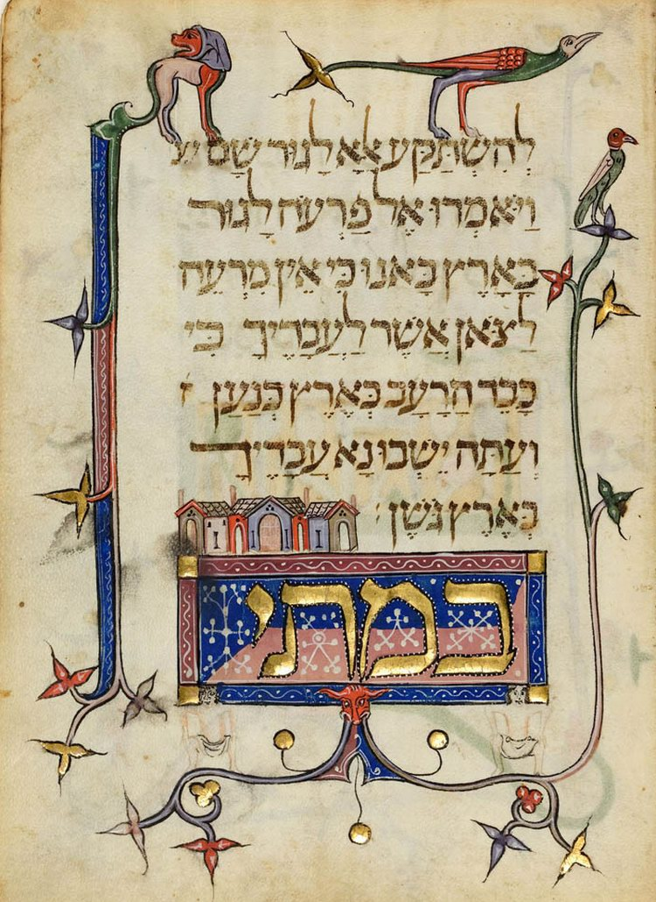
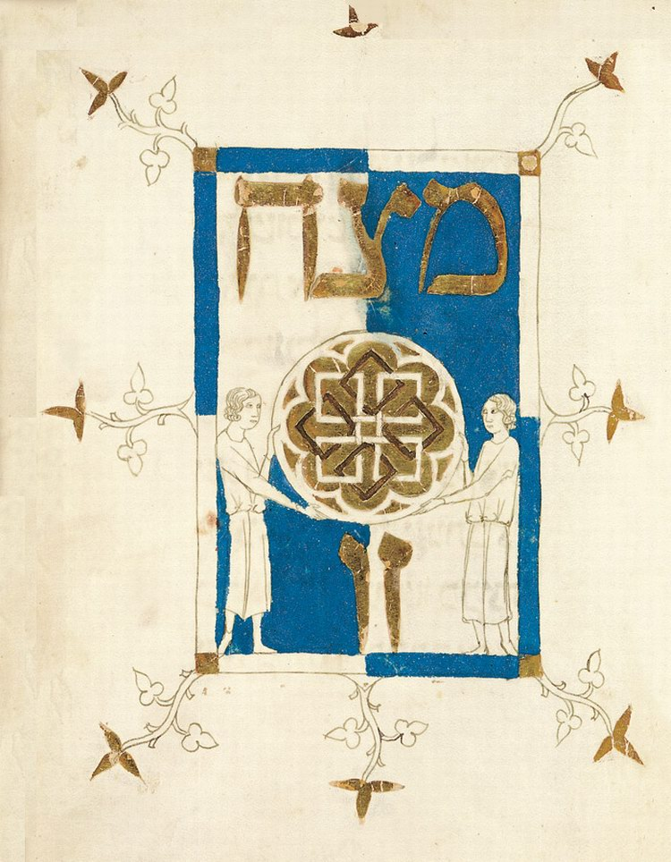
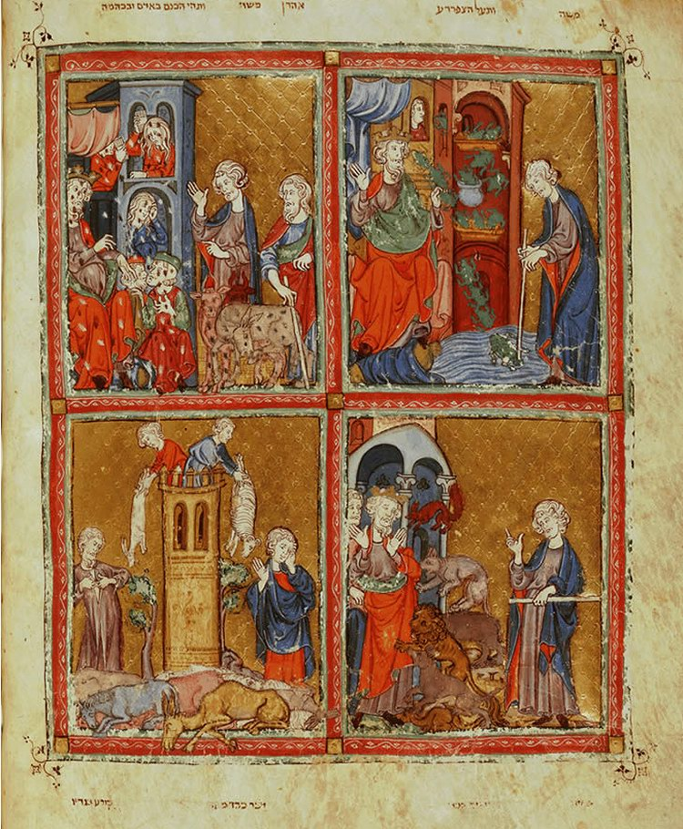
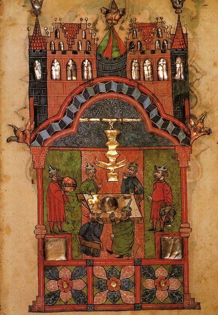
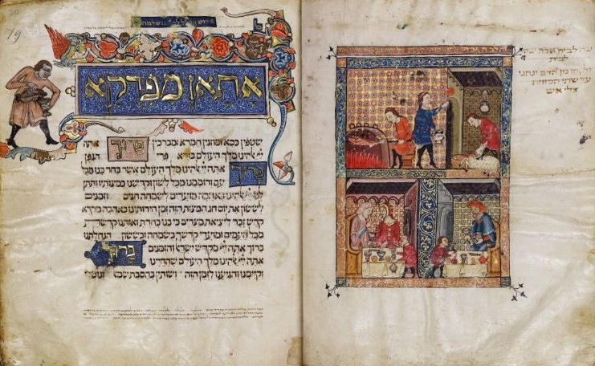
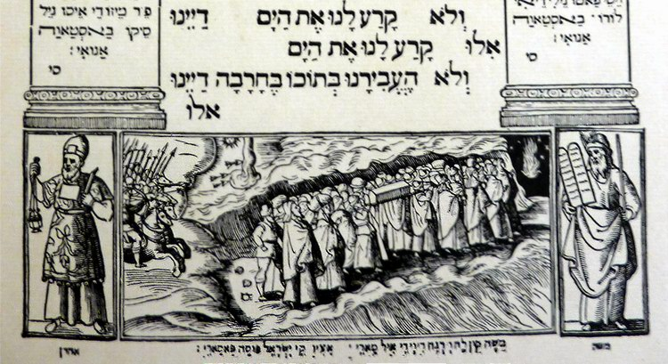

The Passover Haggadah. A Historical Note
The first known "separate editions" of the Passover Haggadah appeared in the 13th century. Around 1300 the custom arose of adding illustrations to the traditional text.

For many centuries the Aggadah was a very popular form of spiritual communication: a platform, a stage, a mystery play, a satire, a hymn of praise and a lullaby. The Aggadah described society and its individual members, and gave artistically realistic pictures of everyday life, imbued with refreshing humour.
The Passover Haggadah (Hebrew הַגָּדָה שֶׁל פֶּסַח, Haggadah shel Pesach) has a special place, meaning and structure. It is a collection of prayers, blessings, commentaries on the Torah and songs connected directly or indirectly with the Exodus from Egypt and the ritual of the feast of Pesach. Reading the Passover Haggadah on the night of Pesach is an obligatory part of the Seder.

The traditional text of the Passover Haggadah took its final shape in the early Middle Ages. But the main elements of the Passover story go back at least to the Second Temple period, when the telling of the Exodus accompanied the festive meal, whose main dish was the meat of the sacrificial lamb.

The Mishnah says that the story of the Exodus should be built as a midrash on the passage of the Torah spoken by a Jew bringing his firstfruits to the Temple as an offering.
Rabban Gamliel (early 1st century) said: "Whoever has not spoken of these three things on Pesach has not fulfilled his obligation (the commandment of the Torah to tell of the Exodus); and these are they: Pesach, matzah and maror. PESACH, because the Omnipresent passed over the houses of our fathers in Egypt; MATZAH, because our fathers were redeemed while still in Egypt; MAROR, because the Egyptians embittered the lives of our fathers in Egypt. In every generation a person is obliged to see himself as though he himself had come out of Egypt…" (Mishnah, Pesachim 10:5).
The body of text of the Passover Haggadah familiar to us took shape in the 7th–8th centuries AD. In the mid-9th century Amram Gaon, head of the yeshiva in Sura, included the Haggadah in his model prayer book, which he called "Seder Rav Amram Gaon".
In the 10th century the text of the Haggadah was included in another prayer book, this time compiled by the great rabbi and philosopher Saadia Gaon (882–942), who also headed the yeshiva in Sura.
In the 13th century the first known "separate editions" of the Passover Haggadah appeared. Around 1300 the custom arose of adding illustrations to the traditional text. At about the same time an unknown master created the famous "Birds' Head Haggadah".
Around 1320, in Catalonia, the oldest known Sephardi illustrated Haggadah was made: the so-called "Golden Haggadah", most likely commissioned by one of the local wealthy Jews.

A few decades later the famous "Sarajevo Haggadah" appeared there as well; it was apparently commissioned as a wedding present for a prosperous Jewish couple.

The 1460s: the beginning of Hebrew printing.
In 1482 (only ten years before the expulsion!) the first printed edition of the Passover Haggadah was undertaken in Guadalajara in Spain. Four years later another Haggadah was printed in Italy, at the famous Soncino press. In 1505 the first annotated edition of the Haggadah appeared in Constantinople. The commentary was called "Zevach Pesach" ("The Passover Sacrifice") and was written by Don Isaac Abarbanel, one of the spiritual leaders of those Spanish Jews who chose exile rather than baptism.


Later the Passover Haggadah went through many editions and reprints in different countries. Here are just a few of the best known:
In 1526–1527 the brothers Gershom Cohen and Groenem Katz published in Prague the first printed illustrated edition of the Haggadah. In 1545 "Zevach Pesach" was reprinted in Venice; since Hebrew printing was forbidden in the republic at the time, the book was typeset at the Christian press of one Marco Antonio Giustiniani.

In 1590 a Haggadah including the text of the song "Chad Gadya" ("One Little Goat"), the only Passover song written in Aramaic, was printed for the first time, in Prague.
For more on the history of the Passover Haggadah, see lechaim.ru (in Russian).
See also the contemporary art midrash on the traditional Haggadah.
 Kinderfresser, the Child Eater
Kinderfresser, the Child Eater Mark Antokolsky. Christ Before the People. Part II
Mark Antokolsky. Christ Before the People. Part II Tell Me About Your Sandals and I'll Tell You Who You Are. Part I
Tell Me About Your Sandals and I'll Tell You Who You Are. Part I